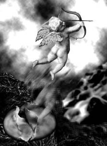
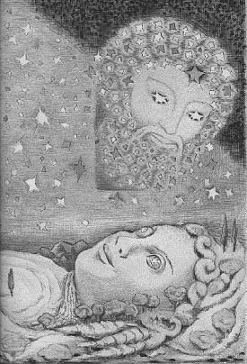

İNSAN VE MİTOLOGYA
Yaradılışı gereği insanoğlu, daha gözlerini dünyaya açar açmaz, hemen çevresini bilip tanımak ve onu kendince dönüştürmek isterdi. Bu yüzden de hep olağanüstü güçlüklerle boğuşmak zorunda kalır ve haliyle tam anlayamadığı bu güçlük ve engelleri, "tanrılar"la özdeşleştirirdi. Sonra da bu konuda sayısız söylenceler üretirdi. Ne var ki onun dillendirdiği tanrılar, aslında insanoğlunun elleriyle yakalamak isteyip de yakalayamadığı kendi gölgesinden başka bir şey değildi...
Eski çağlarda karanlıklar içindeki atalarımız da, henüz bilim olmadığı için, kendilerine sordukları soruları, haliyle mitos'larla yani efsanelerle, söylencelerle açıklamaya çalışıyorlardı. İşte insanların ürettikleri bu tür efsanelerin, mitosların tümüne mitologya diyorduk...
Örneğin bu efsanelerden birine göre tanrılar; tıpkı insanlar gibi, Yeryüzü'yle Gökyüzü'nün aşklarından dünyaya gelmişlerdi. Ne var ki tanrılar çok güçlüydüler, ölümsüzdüler... Buna karşın onlar da insanlarla birlikte aynı yazgıyı paylaşıyorlardı...[1]
İşte bu türden açıklamalarla insanoğlunun yaşam serüvenine çocuksu, şiirsel bir anlam yükleyen mitologya; örneğin Batı uygarlığının hamuru ve mayasıydı. O yüzden de o, Batı toplumları için çok önemliydi ve haliyle onları çok yakından ilgilendiriyordu...
Ne var ki aslında Avrupalıları ilgilendirdiğinden çok daha fazlasıyla, bizim toplumumuzu ilgilendirmesi gerekiyordu mitologyanın... Çünkü onun doğduğu ve binyıllardır harmanlanıp mayalandığı bir coğrafyada, onun tetiklediği uygarlıkların evrensel kalıtlarıyla birlikte, iç içe ama birbirimize yabancı olarak yaşıyorduk!.. O yüzden de efsanelerden kaynaklanan uygarlıkların mermerlere işlenmiş evrensel kalıtlarına ve de antik kentlerimize gerekli önemi veremiyorduk... Gene bu mitologyanın tetiklediği Batının sanat yapıtlarını, felsefesini tam olarak anlayamıyorduk. Avrupa'ya gidenlerimizin çoğu; meydanlarda, üniversite avlularında, örneğin omuzları üstünde dünyayı taşıyan heykellerin, posta arabalarındaki Hermes adının, "Demeter Ekmekçisi" yazan fırınların anlatmak istediklerini çoğunlukla anlayamıyordu... Batılılar bu mitologyanın tetiklediği kültürle harmanlanmışlar; böylece uygarlıklarını oluşturmuşlardı. Ve onların gençleri de haliyle bütün bunları daha okullarında öğreniyorlardı... Günlük yaşamlarında, kentlerinde, kültürel etkinliklerde hep mitologyayla iç içeydiler.
Kısacası Batı uygarlığı, Anadolu'dan geçiyordu...
İşte hiç değilse bu nedenlerle, buncasına birbirimize yabancı olduğumuz ama kendi topraklarımızın ürünü olan evrensel mitologyamızla tanışıp bütünleşmenin zamanı artık çoktan gelip çattı, diyoruz...
EFSANELER NASIL OLUŞUYORDU
İlkin dilimizde efsane, söylence diyebileceğimiz şu "mitos" ve mitosların toplamı anlamına gelen "mitologya" sözcüklerini biraz daha açmaya çalışalım...
İstanbul'da, bir yolcu gemisinde tanık olduğum o olayı hiç unutamam... Küçük bir kız çocuğu, geminin arkasında dönen pervanenin oluşturduğu köpüklere bakıyordu büyük bir ilgiyle... Birden; "Anne!" diye bağırdı. Eliyle köpükleri göstererek; "Bunlar ne?" diye sordu. Annesi biraz düşündükten sonra; "Ha, onlar mı?.. Balıklar çamaşır yıkıyor da ondan çocuğum!" dedi. Çocuk birden gülümsemeye başladı mutluluktan... Çünkü o anda kafasını karıştıran o büyük sorusuna bir "efsane" aracılığıyla yanıt bulmuş, rahatlamıştı...
Ta binlerce yıl önceki atalarımız da, daha bilim oluşmadığı için, dünyayı işte bu beş-altı yaşındaki çocuğun gözleriyle görüyor ve onun aklıyla dünyamızı yorumlamaya çalışıyorlardı...
Örneğin onlar, çok doğal olarak güneşi hem çok seviyorlar, hem de ondan çok ürküyorlardı... Çünkü sabahleyin atların koşturduğu bir arabadaki ateş yumağı; karşılarındaki dağın ardından gökyüzüne doğru ağır ağır ilerliyor; saçtığı ışık ve ateşle dünyamızı bir güzel ısıtıp aydınlatıyordu... Ama bir süre sonra da, pırıl pırıl yaydığı ışıklarını yeniden arabasına dolduruyor; gene bir dağın ya da tepenin arkasına doğru saklanıyor, gözden yitip gidiyordu... Ne var ki bu gizemli ışık ve ateş yumağı, hem dünyamız hem insanlar için anlatılamaz güzellikte ve çok yararlı bir şeydi...
O yüzden "Güneş" bir tanrı olmalıydı! Haliyle onun adına güzel tapınaklar kurmak, şiirler, şarkılar düzmek gerekiyordu...
Ne var ki güneş, akşama doğru bir tepenin ardına doğru çekip gittikten sonra, onun yerine bir karanlık geliyordu. Ve bu karanlık ürkünçtü, soğuktu; insanlar için hiç de iyi bir şey değildi... O yüzden "Karanlık" da bir tanrı olmalıydı. Haliyle kendilerine bir zarar gelmemesi için, bu ürkünç karanlık tanrı adına da şiirler düzmek, heykellerini dikmek gerekiyordu...
İşte böyle böyle insanoğlu, durmadan kendine sorduğu sorulara, ürettiği efsaneler yoluyla yanıtlar arıyordu...
Gene bu bağlamda, dünyanın ve insanoğlunun oluşumuyla ilgili olarak örneğin şöyle bir efsane kuruyordu kafasında: Daha hiçbir şeyin varolmadığı o eski zamanlarda, Kaos denen büyük bir boşluk vardı yalnızca. Bu büyük boşlukta da zaman içinde, kocaman bir yumurta oluşup olgunlaştı ve bir gün ortasından çatlayıp boydan boya ikiye bölünüverdi! Yumurtanın içinde oluşmuş ilk tanrısal yaratık, hemen ayaklarıyla alt kabuğu aşağıya doğru itti; böylece Yeryüzü oluştu. Elleriyle de üst kabuğu yukarı doğru itti; Gökyüzü oluştu...
Yumurtanın içinde oluşan ve çatlamış kabukları iten bu ilk kanatlı tanrısal varlığın adı da, Eros denen Aşk'tı.

Hep aşk okları salan yaramaz Eros
İşte Yeryüzü ve Gökyüzü; yaratıcıları olan Eros denen Aşk yüzünden, birbirlerine hemen deli divane vuruluverdiler... Gökyüzü, Yeryüzü'ne duyduğu o sınırsız sevgisini kanıtlamak için mavi giysilerini ışıl ışıl yıldızlarla, ayla, güneşle donattı hemen... Ve mevsimine göre yağmur yağmur, ışık ışık yağdı sevgilisi olan Yeryüzü'nün topraktan bedeni üstüne... Yeryüzü de, âşık olduğu Gökyüzü'nün yağdırdığı o ışık ve yağmurları; topraktan bedeninin bütün şehvet ve sıcaklığıyla, en güzel bitkilere, tahıllara, en lezzetli meyve ağaçlarına dönüştürdü... Ve onların bu karşılıklı sevgileri ve üretimleri sürerken, Aşk oklarının yaramaz tanrısı Eros da hep yanlarında oldu... O durmadan aşk okları gönderdi iki sevgilinin yüreklerine... Bu yüzden de Yeryüzü'nü ve Gökyüzü'nü artık hep o Eros denen Aşk yönlendirmeye başladı...

Birbirlerini çok seven Yeryüzü ile yıldız yıldız giyinmiş Gökyüzü
Böyle böyle, gönüllerince istedikleri varlıkların yaratımlarını tamamladıktan sonra Gökyüzü'yle Yeryüzü, dünyayı yönlendirmek ve şekillendirmek üzere, kendi benzerleri olacak o güzel insanları yaratmaya karar verdiler. Böylece Gökyüzü'nün döktüğü ışık ve yağmur sağanaklarıyla harmanlanan Yeryüzü, kendi öz çocukları olacak insanları doğurdu toprak bedeninden... Ve onları kendilerinde bile olmayan olağanüstü akıl ve yeteneklerle donattılar... Haliyle dünyamızı da çeşit çeşit güzellik ve nimetlerle doldurdular. Sırf öz çocukları olan bu insanoğlu, ne istiyorlarsa bol bol üretip tüketsinler diye. Ve gene hep aydınlıkta ve kardeşçe yaşasınlar diye ateşle, ışıkla donattılar onları. Bu arada onların mutluluklarına yardımcı olacak insan benzeri, çok güçlü kahramanlar da yarattılar... Bunun ardından yalnızca sevgiye, kardeşliğe ve adalete dayanan bir zemberekle kurdular dünyamızın düzenini... Ondan sonra da kendi hallerinde yaşayıp gitmek üzere, şimdiki yerlerine çekildiler sessizce...
Ne var ki çok geçmeden tanrılar ve kahramanlar arasında taht ve egemenlik savaşları başladı... Kısa sürede bu kavgalar, insanlara da bulaştı...
Ondan sonra da haliyle olacaklar olmaya başladı... Birbirlerine hasım kesilen tanrılar ve kahramanlar; dağları, tepeleri koparıp koparıp birbirlerinin üstüne attılar... Kısa sürede Ege ve Akdeniz coğrafyasında binlerce adacık, yamru yumru sayısız dağlar, ovalar oluştu...
İşte bu hengâmede, korkular içinde kendilerine yol yordam arayan umarsız insanoğlunun yardımına, gene kendi içlerinden çıkan soylu sanatçılar, filozoflar yetişti. Ürkünç efsanelere insancıl anlamlar yükleyip insanoğlunun önünü aydınlatmaya çalıştılar... Böylece sanatın ve bilimlerin mayasını ve hamurunu oluşturan bu efsaneler, insanlığın binyıllardır düşe kalka da olsa sürdürdüğü uygarlık yolundaki o büyük yürüyüşünde, en etkin kılavuz fenerlerine dönüştüler...
Örneğin Egeli büyük Homeros; sanatların, felsefenin, tarihin, kısaca uygarlığın kaynağı olmuş efsanelerle yüklü halk destanlarını, kendi dehasıyla arıtıp yorumladıktan sonra onları, İlyada ve Odisseya adlı destanlar olarak yazıya döktü. İlyada destanında örneğin, Çanakkale yakınlarındaki Troya'da olmuş ilk kıtalar arası savaşlar sırasında, insanların ve tanrıların serüvenlerine, evrensel bir hümanizma yükledi. O yüzden örneğin Homeros'un kendisi Grek olmasına karşın, aklı ve gönlünün yönlendirmesiyle, işgal altındaki mazlum Troyalıların saflarında yer alıyordu. Ve Batı uygarlığının üyeleri dediğimiz Avrupalılar da, onun bu destanlarında dillendirdiği tanrıların ve kahramanların tetiklediği hümanizmayla; bilimlerde, sanatlarda durmadan yol alıyorlardı... Ve üstünde yaşadığımız bu toprakların ölümsüz ozanı Homeros hakkında da onlar, tam kırk beş bin çeşit kitap yazıyorlardı!
HALKLARIN MİTOLOGYALARI
Her halkın, örneğin Eskimoların bile bir mitologyası vardı. Ne var ki safkan bir mitologya yoktu... Olamazdı da... Çünkü efsaneler, tarih boyunca uluslardan uluslara anlatılmış; hayvancılıkla geçinen göçmen kavimlerle, savaşa çıkmış gezginci ordularla ülkeden ülkeye, kıtadan kıtaya dolaşmıştır. Efsanelerdeki tanrılar ve kahramanlar da haliyle geldikleri yeni ülkelerin tanrılarıyla, kahramanlarıyla tanışıp evlenmişler, yeni soylar üretmişler, değişik dönüşümlere ve yorumlara uğramışlardı...
Bu bağlamda Batı uygarlığının mayası olan Grek mitologyası da, daha birkaç yüzyıl öncesine dek, mitologyanın kaynağı ve başlangıcı sanılıyordu... Oysaki Grekler de Asyalı göçmen halklardı. MÖ iki bin yıllarından başlayarak, Hindistan dolaylarındaki yurtlarından, yanlarına tanrılarını da alıp önlerindeki sürüleriyle birlikte düşe kalka, çok uzun süren bir göçe başlamışlar ve sonunda bugünkü Yunanistan yörelerine ulaşmışlardı. Grekler dalga dalga şimdiki topraklarına geldiklerinde, Anadolu'da çok büyük uygarlık kalıtları ve sözcüğün tam anlamıyla uygarca yaşayan toplumlar vardı. Buna örnek olarak bütün görkemiyle bize ulaşmış olan Mezopotamya'daki Sümer uygarlığını ve onun mitologyasını gösterebiliriz. Daha bir yüzyıl önce çözülebilen Sümerlilerin çivi yazıları, dünya bilim tarihini altüst etti. Çünkü Mezopotamya'da milattan üç-beş bin yıl önce yaşam bulan Sümerlilerin uygarlığı ve onun hamuru olan mitologyası, kendilerinden sonraki uygarlıkların da (Hititlerin, Greklerin) kaynağını oluşturmuştu. Amerikalı Sümerolog S. N. Kramer, onyıllar süren araştırmaları sonunda, uygarlığın ilk kaynağı olarak gösterdiği Sümerliler hakkında; "Tarih Sümer'de Başlar" adlı o yoğun ve şaşırtıcı bilimsel kitabını yazdı.
Mezopotamya'daki Sümerlilerden evrilerek gelen uygarlık kalıtlarını ve onun mitologyasını kullanan antikçağdaki Grek sanatçılar ve bilim insanları; örneğin tiyatro, şiir gibi edebiyat, felsefe, heykelcilik, musiki dallarında çeşitli sanat yapıtları ürettiler. Ve bu yapıtlarıyla da uygarlığın önünü araladılar... Greklerin mitologyası daha sonra Romalılara geçti ve haliyle yeniden değişim ve dönüşümlere uğradı. Ondan çok sonraları da Avrupalılar, bu mitologyayı ve onun tetiklediği kültürü alıp benimsediler... Böylece bu mitologya, Batı uygarlığı denen oluşumun mayasını ve hamurunu oluşturdu; bütün sanat ve bilim dalları, bu mitologyanın yoldaşlığında serpilip gelişti...
Antikçağdaki sanatçılar, filozoflar bu efsaneleri kendilerince yorumlayarak, özellikle tiyatro ozanları da onları oyunlaştırarak, o çağdaki korkular içindeki insanların kendilerine güven duyup yeni bir yol bulmalarına yardımcı oldular. Efsanelerdeki o ürkünç olayları yumuşattılar. Tanrıları ve kahramanları insanlaştırıp insancıllaştırdılar. Örneğin Olimpos'ta oturan Baştanrı Zeus'un ve öteki tanrıların zorba ve ürkünç egemenliğine karşı o zayıf insanoğlunu seven ve onun için savaşan kahramanların da olduğunu anlatmaya çalıştılar. Bu bağlamda Ayshülos (Aiskhylos), Euripides gibi tiyatro ozanları; Baştanrı Zeus'un köşe bucak sakladığı ateşi çalıp insanlara ulaştıran insan dostu Prometeus'u (Prometheus) işlediler örnek olarak. Prometeus; insanoğlunun ışıklanıp aydınlanmasını, bilimlerde ilerlemesini ve bu yolla kendi içinde saklı ve daha ilk basamaklarını tırmandığı o yüksek doruklarına doğru yükselmesini istiyordu... Bu yüzden binyıllar boyunca da özverili tanrı Prometeus, sanatçıların en gözde konularından birini oluşturdu.
Zaten antikçağın sanatçılarına ve düşünürlerine göre tanrısal bir güç sürekli devinim halindeydi ve aynı zamanda o, dünyamızın güç kaynağıydı. Onlara göre tanrı; dünyanın özüne, sürekli ve değişen bir güzellik ve güç olarak sinip yerleşmişti. Ve dünyanın özündeki bu güç; bitkilerin yaşamında, hayvanların sayısız şekilde üreyip bollaşmasında, minerallerin sessizliğinde kendilerini belli ediyorlardı. Ve Olimpos'ta oturan bütün tanrılar da, tıpkı insanoğlu gibi, Toprak-Ana'dan varolmuşlardı.
Çünkü o ölümsüz tanrılarla yarı-ölümlü kahramanlar; aslında evrensel doğanın tükenmez bir yaratıcılıkla donattığı insanoğlunun öz be öz kendisinin en güzel ve en anlamlı simgeleriydi...
Antikçağdaki efsanelerin kahramanlarını simge olarak yapıtlarında kullanan ve insanoğlunun uygarlık yürüyüşünde en güvenli kılavuz fenerlerine dönüşen o soylu sanatçılara ve filozoflara göre bilimlerle donanan insanoğlu, önündeki engelleri sürekli aşaraktan yol alacaktı... Ve bir gün kesinlikle evreni fethedecekti. Sonunda da artık o güzelim Altınçağını yaşamaya başlayacaktı.
Haliyle onun o çok uzun süren uygarlık sürecindeki yolculuğu sırasında, kendisine kılavuzluk eden ve kendi simgesi olan kahramanları da unutmayacaktı... Belki de bu yolda ölümsüzleşen insan dostu Prometeus, onun en güvendiği ilk ve son tanrı olacaktı...
İşte kısaca böyle söylüyordu yaşadığımız toprakların evrensel efsaneleri...
Ve zaten insanoğlunun eninde sonunda, bilimler yoluyla ulaşıp kardeşçe yaşamak istediği son güzergâh da, bunun ötesinde başka bir yer değildi...